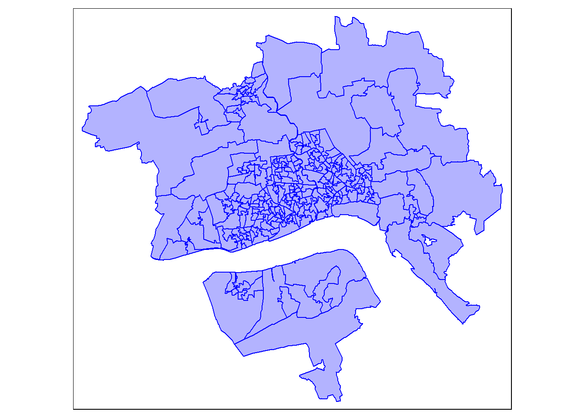
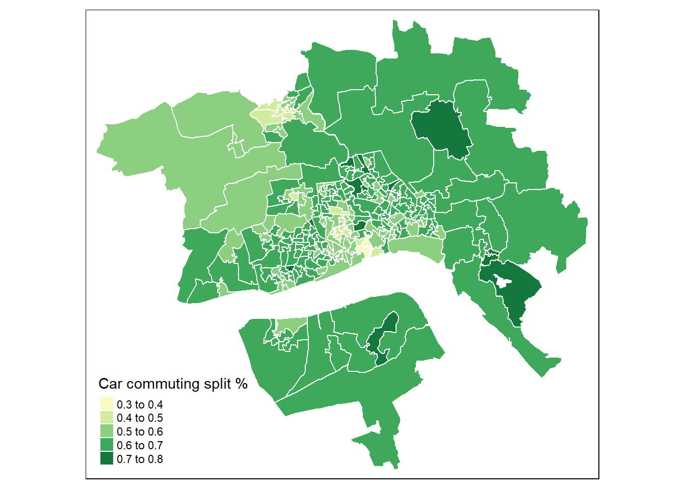

library(sf)
library(tidyverse)
library(tmap)
library(MinorRoadTraffic)Census data
LSOA Boundaries
Loading the bounds produced from the grouped counts
bounds <- st_read(dsn = "03_preprocessing_files/bounds.geoJSON")Reading layer `bounds' from data source
`C:\Users\ts18jpf\OneDrive - University of Leeds\02_MsC\99_GEOG5099M_Dissertation\GEOG5099_Analysis\03_preprocessing_files\bounds.geoJSON'
using driver `GeoJSON'
Simple feature collection with 1 feature and 0 fields
Geometry type: POLYGON
Dimension: XY
Bounding box: xmin: 501634.1 ymin: 423660 xmax: 517322.2 ymax: 437607
Projected CRS: OSGB36 / British National Gridif(!file.exists("02_raw_census/LSOA_selected.gpkg")){
download_lsoa_2021 <- function(url = "https://github.com/juanfonsecaLS1/GEOG5099_Analysis/releases/download/v0/LSOA_Dec_2021_Boundaries_Generalised_Clipped_EW_BGC_2022_5605507071095448309.geojson",
bounds){
dir.create(file.path("02_raw_census","lsoa"),recursive = T,showWarnings = F)
if(!file.exists(file.path("02_raw_census","lsoa","LSOA_2021.geojson"))){
utils::download.file(url, destfile = file.path("02_raw_census","lsoa","LSOA_2021.geojson"),
mode = "wb")}
res = sf::read_sf(file.path("02_raw_census","lsoa","LSOA_2021.geojson"))
return(res)
}
lsoa <- download_lsoa_2021()
lsoa_fixed <- lsoa |> st_make_valid()
lsoa_selected <- lsoa_fixed[bounds,]
st_write(lsoa_selected,"02_raw_census/LSOA_selected.gpkg")
rm(lsoa,lsoa_fixed)
}else{
lsoa_selected <- st_read("02_raw_census/LSOA_selected.gpkg")
}Reading layer `LSOA_selected' from data source
`C:\Users\ts18jpf\OneDrive - University of Leeds\02_MsC\99_GEOG5099M_Dissertation\GEOG5099_Analysis\02_raw_census\LSOA_selected.gpkg'
using driver `GPKG'
Simple feature collection with 259 features and 4 fields
Geometry type: MULTIPOLYGON
Dimension: XY
Bounding box: xmin: 488932.5 ymin: 411729 xmax: 527121.4 ymax: 446712.1
Projected CRS: OSGB36 / British National Gridtmap_mode("plot")tmap mode set to plottingtm_basemap("OpenStreetMap")+
tm_shape(lsoa_selected)+
tm_polygons(col = "blue",
alpha = 0.3,
border.col = "blue")
Downloading Data
The following code downloads the 2021 Census data.
Population TS001
dir.create(file.path("02_raw_census","census"),recursive = T,showWarnings = F)
if(!file.exists(file.path("02_raw_census",
"census",
"pop_2021.zip"))){
download.file("https://www.nomisweb.co.uk/output/census/2021/census2021-ts001.zip",
destfile = file.path("02_raw_census","census","pop_2021.zip"),
mode = "wb")}
pop <- read_csv(unz(file.path("02_raw_census",
"census",
"pop_2021.zip"),
"census2021-ts001-lsoa.csv"),
col_types = cols(
date = col_double(),
geography = col_character(),
`geography code` = col_character(),
`Residence type: Total; measures: Value` = col_double(),
`Residence type: Lives in a household; measures: Value` = col_double(),
`Residence type: Lives in a communal establishment; measures: Value` = col_double()
)
) |> rename_with(.cols = starts_with("Residence"),
~ gsub("Residence type: ","",.x))|>
tibble(.name_repair = "universal")Workplace population
if(!file.exists(file.path("02_raw_census","census","wp_pop_2021.zip"))){
download.file("https://www.nomisweb.co.uk/output/census/2021/wp001.zip",
destfile = file.path("02_raw_census","census","wp_pop_2021.zip"),
mode = "wb")}
wp_pop <- read_csv(
unz(
file.path("02_raw_census",
"census",
"wp_pop_2021.zip"),
"WP001_lsoa.csv"
),
col_types = cols(
`Lower layer Super Output Areas Code` = col_character(),
`Lower layer Super Output Areas Label` = col_character(),
Count = col_double()
)
) |>
tibble(.name_repair = "universal")Workplace method to travel to work
if(!file.exists(file.path("02_raw_census", "census", "wp_mode_2021.zip"))) {
download.file(
"https://www.nomisweb.co.uk/output/census/2021/wp025.zip",
destfile = file.path("02_raw_census", "census", "wp_mode_2021.zip"),
mode = "wb"
)
}
wp_mode <- read_csv(
unz(
file.path("02_raw_census",
"census",
"wp_mode_2021.zip"),
"WP025_msoa.csv"
),
col_types = cols(
`Middle layer Super Output Areas Code` = col_character(),
`Middle layer Super Output Areas Label` = col_character(),
`Method used to travel to workplace (12 categories) Code` = col_double(),
`Method used to travel to workplace (12 categories) Label` = col_character(),
Count = col_double()
)
) |>
tibble(.name_repair = "universal")Exmployment Status TS066
if(!file.exists(file.path("02_raw_census","census","employment_2021.zip"))){
download.file("https://www.nomisweb.co.uk/output/census/2021/census2021-ts066.zip",
destfile = file.path("02_raw_census","census","employment_2021.zip"),
mode = "wb")}
employ <- read_csv(unz(file.path("02_raw_census",
"census",
"employment_2021.zip"),
"census2021-ts066-lsoa.csv")
,
col_types = cols(
date = col_double(),
geography = col_character(),
`geography code` = col_character(),
`Economic activity status: Total: All usual residents aged 16 years and over` = col_double(),
`Economic activity status: Economically active (excluding full-time students)` = col_double(),
`Economic activity status: Economically active (excluding full-time students):In employment` = col_double(),
`Economic activity status: Economically active (excluding full-time students):In employment:Employee` = col_double(),
`Economic activity status: Economically active (excluding full-time students): In employment: Employee: Part-time` = col_double(),
`Economic activity status: Economically active (excluding full-time students): In employment: Employee: Full-time` = col_double(),
`Economic activity status: Economically active (excluding full-time students):In employment:Self-employed with employees` = col_double(),
`Economic activity status: Economically active (excluding full-time students): In employment: Self-employed with employees: Part-time` = col_double(),
`Economic activity status: Economically active (excluding full-time students): In employment: Self-employed with employees: Full-time` = col_double(),
`Economic activity status: Economically active (excluding full-time students):In employment:Self-employed without employees` = col_double(),
`Economic activity status: Economically active (excluding full-time students): In employment: Self-employed without employees: Part-time` = col_double(),
`Economic activity status: Economically active (excluding full-time students): In employment: Self-employed without employees: Full-time` = col_double(),
`Economic activity status: Economically active (excluding full-time students): Unemployed` = col_double(),
`Economic activity status: Economically active and a full-time student` = col_double(),
`Economic activity status: Economically active and a full-time student:In employment` = col_double(),
`Economic activity status: Economically active and a full-time student:In employment:Employee` = col_double(),
`Economic activity status: Economically active and a full-time student: In employment: Employee: Part-time` = col_double(),
`Economic activity status: Economically active and a full-time student: In employment: Employee: Full-time` = col_double(),
`Economic activity status: Economically active and a full-time student:In employment:Self-employed with employees` = col_double(),
`Economic activity status: Economically active and a full-time student: In employment: Self-employed with employees: Part-time` = col_double(),
`Economic activity status: Economically active and a full-time student: In employment: Self-employed with employees: Full-time` = col_double(),
`Economic activity status: Economically active and a full-time student:In employment:Self-employed without employees` = col_double(),
`Economic activity status: Economically active and a full-time student: In employment: Self-employed without employees: Part-time` = col_double(),
`Economic activity status: Economically active and a full-time student: In employment: Self-employed without employees: Full-time` = col_double(),
`Economic activity status: Economically active and a full-time student: Unemployed` = col_double(),
`Economic activity status: Economically inactive` = col_double(),
`Economic activity status: Economically inactive: Retired` = col_double(),
`Economic activity status: Economically inactive: Student` = col_double(),
`Economic activity status: Economically inactive: Looking after home or family` = col_double(),
`Economic activity status: Economically inactive: Long-term sick or disabled` = col_double(),
`Economic activity status: Economically inactive: Other` = col_double()
)
) |> rename_with(.cols = starts_with("Economic"),
~ gsub("Economic activity status: ","",.x))|>
tibble(.name_repair = "universal")Car Availability TS045
if(!file.exists(file.path("02_raw_census","census","car_avail_2021.zip"))){
download.file("https://www.nomisweb.co.uk/output/census/2021/census2021-ts045.zip",
destfile = file.path("02_raw_census","census","car_avail_2021.zip"),
mode = "wb")
}
car_avail <- read_csv(unz(file.path("02_raw_census",
"census",
"car_avail_2021.zip"),
"census2021-ts045-lsoa.csv"),
col_types = cols(
date = col_double(),
geography = col_character(),
`geography code` = col_character(),
`Number of cars or vans: Total: All households` = col_double(),
`Number of cars or vans: No cars or vans in household` = col_double(),
`Number of cars or vans: 1 car or van in household` = col_double(),
`Number of cars or vans: 2 cars or vans in household` = col_double(),
`Number of cars or vans: 3 or more cars or vans in household` = col_double()
)
) |> rename_with(.cols = starts_with("Number"),
~ gsub("Number of cars or vans: ","",.x))|>
tibble(.name_repair = "universal")Method to work (mode) TS061
if(!file.exists(file.path("02_raw_census","census","comm_mode_2021.zip"))){
download.file("https://www.nomisweb.co.uk/output/census/2021/census2021-ts061.zip",
destfile = file.path("02_raw_census","census","comm_mode_2021.zip"),
mode = "wb")
}
comm_mode <- read_csv(
unz(file.path("02_raw_census",
"census",
"comm_mode_2021.zip"),
"census2021-ts061-lsoa.csv",),
col_types = cols(
date = col_double(),
geography = col_character(),
`geography code` = col_character(),
`Method of travel to workplace: Total: All usual residents aged 16 years and over in employment the week before the census` = col_double(),
`Method of travel to workplace: Work mainly at or from home` = col_double(),
`Method of travel to workplace: Underground, metro, light rail, tram` = col_double(),
`Method of travel to workplace: Train` = col_double(),
`Method of travel to workplace: Bus, minibus or coach` = col_double(),
`Method of travel to workplace: Taxi` = col_double(),
`Method of travel to workplace: Motorcycle, scooter or moped` = col_double(),
`Method of travel to workplace: Driving a car or van` = col_double(),
`Method of travel to workplace: Passenger in a car or van` = col_double(),
`Method of travel to workplace: Bicycle` = col_double(),
`Method of travel to workplace: On foot` = col_double(),
`Method of travel to workplace: Other method of travel to work` = col_double()
)
) |>
rename_with(.cols = starts_with("Method"),
~ gsub("Method of travel to workplace: ","",.x)) |>
tibble(.name_repair = "universal")Data from Place-based Carbon Calculator
pbcc <- download_pbcc() |>
semi_join(lsoa_selected,by = c("LSOA11NM"="LSOA21NM"))Pre-processing
Sub-setting the census data
Population
lsoa_pop <- pop |>
semi_join(lsoa_selected, by = c("geography.code"="LSOA21CD")) |>
select(geography.code,Total..measures..Value) |>
rename(total_pop = Total..measures..Value)Employment status
lsoa_employ <- employ |>
semi_join(lsoa_selected, by = c("geography.code"="LSOA21CD")) |>
select(geography.code, Economically.active..excluding.full.time.students..In.employment) |>
rename(total_employed = Economically.active..excluding.full.time.students..In.employment)Workplace population
lsoa_wp_pop <- wp_pop |>
semi_join(lsoa_selected,
by = c("Lower.layer.Super.Output.Areas.Code"="LSOA21CD")) |>
select(Lower.layer.Super.Output.Areas.Code,Count) |>
rename(geography.code = Lower.layer.Super.Output.Areas.Code,
wk_pop = Count)Car Availability
lsoa_car_avail <- car_avail |>
semi_join(lsoa_selected, by = c("geography.code"="LSOA21CD")) |>
mutate(car_avail_perc = (Total..All.households-No.cars.or.vans.in.household)/Total..All.households) |>
select(geography.code,car_avail_perc)Methot to travel to work
lsoa_comm_mode <- comm_mode |>
semi_join(lsoa_selected, by = c("geography.code"="LSOA21CD")) |>
mutate(car_comm_perc = (Taxi+Driving.a.car.or.van+Passenger.in.a.car.or.van)/Total..All.usual.residents.aged.16.years.and.over.in.employment.the.week.before.the.census) |>
select(geography.code,car_comm_perc)Carbon Calculator
lsoa_pbcc <- pbcc |> select(LSOA11,cars_percap_2018)Consolidating and saving Results
LSOA_data <- lsoa_selected |>
left_join(
lsoa_pop |>
left_join(lsoa_employ, by = "geography.code") |>
left_join(lsoa_wp_pop, by = "geography.code") |>
left_join(lsoa_car_avail, by = "geography.code") |>
left_join(lsoa_comm_mode, by = "geography.code") |>
left_join(lsoa_pbcc, by = c("geography.code" = "LSOA11")), by = c("LSOA21CD"="geography.code"))st_write(LSOA_data,"03_preprocessing_files/LSOA_data.gpkg",append = F)Deleting layer `LSOA_data' using driver `GPKG'
Writing layer `LSOA_data' to data source
`03_preprocessing_files/LSOA_data.gpkg' using driver `GPKG'
Writing 259 features with 10 fields and geometry type Multi Polygon.Some visualisations of the data
tmap_mode("plot")tmap mode set to plottingtm_shape(LSOA_data)+
tm_polygons(col = "total_pop",
border.col = "white",
palette = "Blues",
title = "Total Population 2021")tmap_mode("plot")tmap mode set to plottingtm_shape(LSOA_data)+
tm_polygons(col = "wk_pop",
border.col = "white",
style = "jenks",
palette = "Reds",
title = "Total Workplace Population 2021")tmap_mode("plot")tmap mode set to plottingtm_shape(LSOA_data)+
tm_polygons(col = "total_employed",
border.col = "white",
palette = "Greens",
title = "Total people Employed 2021")tmap_mode("plot")tmap mode set to plottingtm_shape(LSOA_data)+
tm_polygons(col = "car_avail_perc",
border.col = "white",
palette = "Reds",
title = "% of households with one or more cars")
tmap_mode("plot")tmap mode set to plottingtm_shape(LSOA_data)+
tm_polygons(col = "car_comm_perc",
border.col = "white",
palette = "YlGn",
title = "Car commuting split %")
tmap_mode("plot")tmap mode set to plottingtm_basemap("Esri.WorldGrayCanvas")+
tm_shape(LSOA_data)+
tm_polygons(col = "cars_percap_2018",
border.col = "white",
palette = c("yellow", "darkgreen"),
title = "Cars per Capita 2018")